SFSC connects
the present and the past.
SFSC는 현재와 과거를 연결합니다.
SFSC가 만드는 혁신.
SFSC는 새로운 가치를 탐색합니다.
다른 시대로의 이동은 인류로 하여금 더욱 넓은 세상으로의 도약을 가능하게 하였습니다.
새로운 세상과 마주한 지금, 또 다른 혁신을 이끌어낼 도구를 만드는 것은 우리의 과제입니다.
시간을 넘어 자유롭게 교류하는 22세기, SFSC는 SHD를 통한 새로운 가치를 제안합니다.

시간이 흘러도 지속되는 가치.
SHD는 전 인류에 통용되는 유일한 화폐입니다.
인류 최초의 화폐인 패폐(조개 화폐)의 형태를 본뜬 SHD(Shell Dollar)는
국가, 인종, 시대에 걸친 전 인류에게 통용되는 가치입니다.
끊임없는 연구, SFSC LAB.
SFSC의 SFSC LAB은 지속적으로 연구하고 개발에 투자합니다.

선도하는 기술력.
SFSC는 지속적으로 연구하고 개발에 투자합니다.
SFSC Lab은 업계를 선도하는 기술을 바탕으로, 창의적인 아이디어와 기술력을 결합하여 혁신을 이루었습니다.
개발부터 생산, 유통, 거래의 전 과정에 걸친 다양한 분야의 전문가들이 SFSC의 신뢰성을 보장합니다.
완벽한 화폐, 안전한 거래.
SFSC는 첨단 기술을 기반으로
SHD의 안전한 거래를 보장합니다.
영구 보존 물질
실물 화폐는 시간이 지나도 변질, 훼손되지 않습니다.
고유 식별 코드
SFSC의 인증받은 기술로 화폐에 고유한 가치를 부여합니다.
초정밀 분석
정밀 분석을 통해 거래되는 SHD의 신뢰성을 보장합니다.